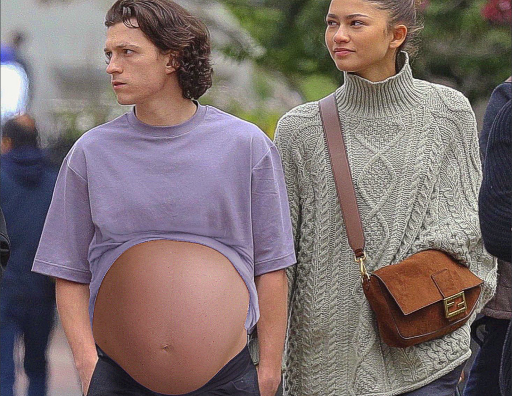

Current Real
Events
JUST IN: 22 YEAR OLD WINS $1,000,000,000
22 YEAR OLD WINS THE ULTIMATE LOTTERY
Rubina Shaik, a 22 year old from Las Vegas Nevada recently announced to the local media that she won the Lotto Sctrach lottery and is over the clouds excited. When the local media asked to see the winning ticket the 22 year old said her dog ate the ticket but she actually did win it. The government was conflicted with this statement. Officials searched Shaik’s house for her dog as well as interviewed her family. They all said “she does not have a dog”.
In the latest update, officials confirmed that she in fact did not win the lottery and is just delusional. #delulu
My Little Pony is Real
My Little Pony is REAL!
Alexander Steves, 40 years old from Oklahoma, was left astounded when he spotted Rainbow Dash, the vibrant Pegasus pony from "My Little Pony," frolicking in his farm. Stunned witnesses claim the pony exhibited the same colorful mane and trademark lightning bolt cutie mark. Photos and videos quickly circulated on social media, sparking playful debates about interdimensional portals or unexpected equine enthusiasts. The event, whether an elaborate prank or a magical anomaly, added a touch of enchantment to the man's mundane day, leaving locals both bewildered and amused by the unexpected visitation of a beloved animated character.
Tom Holland and Zendaya Pregnant??!
Tom Holland and Zendaya world's Hollywood’s IT couple just announced their pregnancy. Holland and Zendaya were seen walking Downtown LA where you can clearly see the cutest baby bump. Congratulations are in order for the couple! Can't wait to see if they welcome a baby boy or a girl.

How to act against inflation
In a comically audacious move, the government has unveiled its latest strategy to combat inflation: the "Just Pretend It's Not Happening" initiative. Economists and citizens alike are scratching their heads as officials encourage a collective denial of rising prices. The groundbreaking plan includes distributing blindfolds labeled "Inflation Blockers" to the public and hosting nationwide events where participants practice turning a blind eye to soaring costs. Critics argue that this approach might be more suited to a sitcom than economic policy, expressing concerns about the impact on purchasing power. Meanwhile, citizens navigate the absurdity, wondering if pretending is the new solution to real-world problems. So basically, just forget about it.
The Earth is flat
In a groundbreaking revelation that challenges centuries-old scientific consensus, a group of rogue scientists has purportedly confirmed that the Earth is indeed flat, casting doubt on established principles of physics. Citing unconventional experiments and selectively interpreted data, these self-proclaimed experts boldly declare that gravity is an elaborate hoax perpetrated by mainstream science. They argue that the perceived force of gravity is merely an optical illusion, asserting that if the Earth were truly round, people on the opposite sides would experience insurmountable discomfort. Seemingly dismissing centuries of empirical evidence, these renegade scientists claim that the curvature of the Earth is an optical trick, and that the flatness of the horizon is proof of our planet's pancake-like existence. While their theories lack support from the wider scientific community, their controversial claims have found a niche following, sparking debates and raising questions among those who are inclined to question established knowledge.